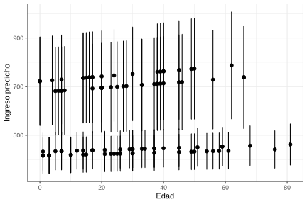

7.6 Modelo de regresión Gamma
El modelo Gamma es apropiado para variables continuas positivas cuya varianza crece con la media, como los ingresos de los hogares. La función de enlace para el MLG Gamma es el recíproco:
\[ \frac{1}{\mu_i} = B_0 + B_1 x_1 + \cdots + B_p x_p, \qquad \text{equivalente a: } \mu_i = \frac{1}{B_0 + B_1 x_1} \]
Para el ajuste del modelo Gamma se utilizan pesos q-weighted en función de las variables de interés. Primero se definen dichos pesos:
mod_qw <- lm(wk ~ Age + Sex + Region + Zone, data = encuesta)
encuesta$wk2 <- encuesta$wk / predict(mod_qw)
diseno_gamma <- encuesta %>%
as_survey_design(
strata = Stratum,
ids = PSU,
weights = wk2,
nest = TRUE
)El modelo Gamma se ajusta especificando family = Gamma(link = "inverse"). Los coeficientes estimados se presentan en la Tabla 7.14:
modelo_gamma <- svyglm(
formula = Income ~ Age + Sex + Region + Zone,
design = diseno_gamma,
family = Gamma(link = "inverse")
)| term | estimate | std.error | statistic | p.value |
|---|---|---|---|---|
| (Intercept) | 0.002 | 0 | 10.973 | 0.000 |
| Age | 0.000 | 0 | -1.284 | 0.202 |
| SexMale | 0.000 | 0 | -1.842 | 0.068 |
| RegionSur | 0.000 | 0 | -0.232 | 0.817 |
| RegionCentro | 0.000 | 0 | 0.138 | 0.890 |
| RegionOccidente | 0.000 | 0 | 1.020 | 0.310 |
| RegionOriente | 0.000 | 0 | 0.032 | 0.975 |
| ZoneUrban | -0.001 | 0 | -4.876 | 0.000 |
El intercepto, la variable edad y la zona rural resultaron significativos con una confianza del 95%. El parámetro de dispersión específico para la distribución Gamma se estima como, presentada en la Tabla 7.15:
data.frame(
Estadístico = c("Dispersión (alpha)", "Dispersión del modelo"),
Valor = c(round(alpha, 4), round(mod_s$dispersion, 4))
) %>% tabla_fmt()| Estadístico | Valor |
|---|---|
| Dispersión (alpha) | 0.483 |
| Dispersión del modelo | 0.591 |
Los intervalos de predicción e intervalos de confianza se calculan con las funciones predict() y confint(), presentada en la Tabla 7.16:
pred_gamma <- data.frame(predict(modelo_gamma, type = "response", se = TRUE))
pred_IC <- data.frame(confint(predict(modelo_gamma, type = "response", se = TRUE)))
colnames(pred_IC) <- c("Lim_Inf", "Lim_Sup")
pred_gamma <- bind_cols(pred_gamma, pred_IC)
pred_gamma$Income <- encuesta$Income
pred_gamma$Age <- encuesta$Age| response | SE | Lim_Inf | Lim_Sup | Income | Age |
|---|---|---|---|---|---|
| 456.8 | 41.80 | 374.9 | 538.8 | 409.9 | 68 |
| 434.4 | 38.07 | 359.8 | 509.0 | 409.9 | 56 |
| 423.5 | 37.33 | 350.3 | 496.7 | 409.9 | 24 |
| 441.2 | 39.35 | 364.1 | 518.3 | 409.9 | 26 |
| 416.7 | 37.78 | 342.6 | 490.7 | 409.9 | 3 |
| 436.1 | 38.37 | 360.9 | 511.3 | 823.8 | 61 |
La Figura 7.4 presenta las predicciones con sus intervalos de confianza para las primeras 100 observaciones, ordenadas por edad:
pd <- position_dodge(width = 0.2)
ggplot(pred_gamma %>% slice(1:100L),
aes(x = Age, y = response)) +
geom_errorbar(aes(ymin = Lim_Inf, ymax = Lim_Sup),
width = 0.1, linetype = 1) +
geom_point(size = 2, position = pd) +
labs(x = "Edad", y = "Ingreso predicho") +
theme_bw()
Figura 7.4: Predicciones del modelo Gamma con intervalos de confianza al 95% para las primeras 100 observaciones